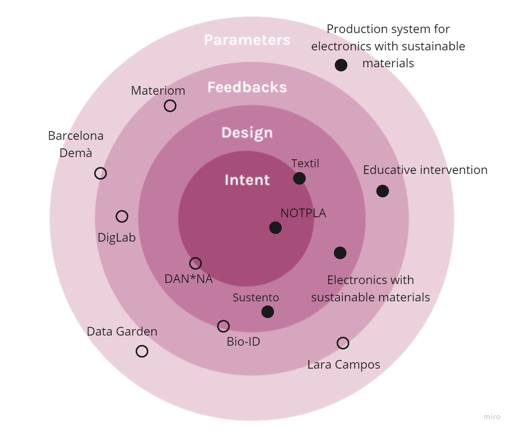
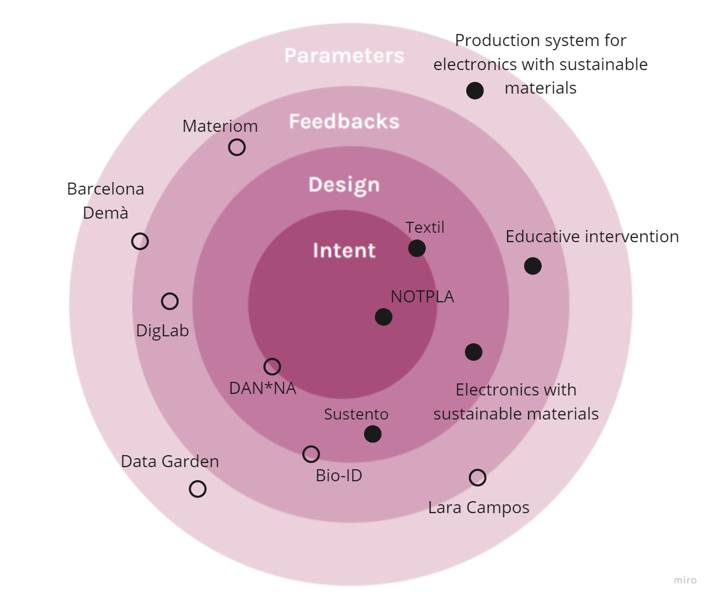

Reflection
The social construct imposes some privileges on us over others. Within the capitalist system you are promised the possibility of obtaining more privileges in exchange for sacrifices and efforts, but this rarely happens. Even so, as it is the only way to achieve them without using illegal resources, and in the end, we all try. Sometimes I find it even fictitious that I have to explain this.

Since we depart from the same system, and we live in organised societies, there is no way to change the system without entering it. What I mean is that yes, you can go to an island (not owned by anyone), and create your own cultural, economic and political system. But then you would create absolutely no change in the world system. If you want to implement a change in the world system you have to act in it.
How can we change the system to improve life and coexistence with living beings without participating in the rise of capitalist dystopia?
Somehow I feel that someone must give me the answer to that, but on the other hand, I don't think anyone knows. And the worst thing is that almost everyone seems to agree that the system needs to be changed. But we are all lost, in this sea of ideas and injustices.It is much easier to live pretending not to see them than to act against them. Because in the end it is much easier to think as an individual and compete, than to think collectively and collaborate. Because in the end everything is based on the struggle for power. And everyone falls into the paradox of; there is always someone who is worse off than you.
Some reflection, sorry they are in catalan.


 
